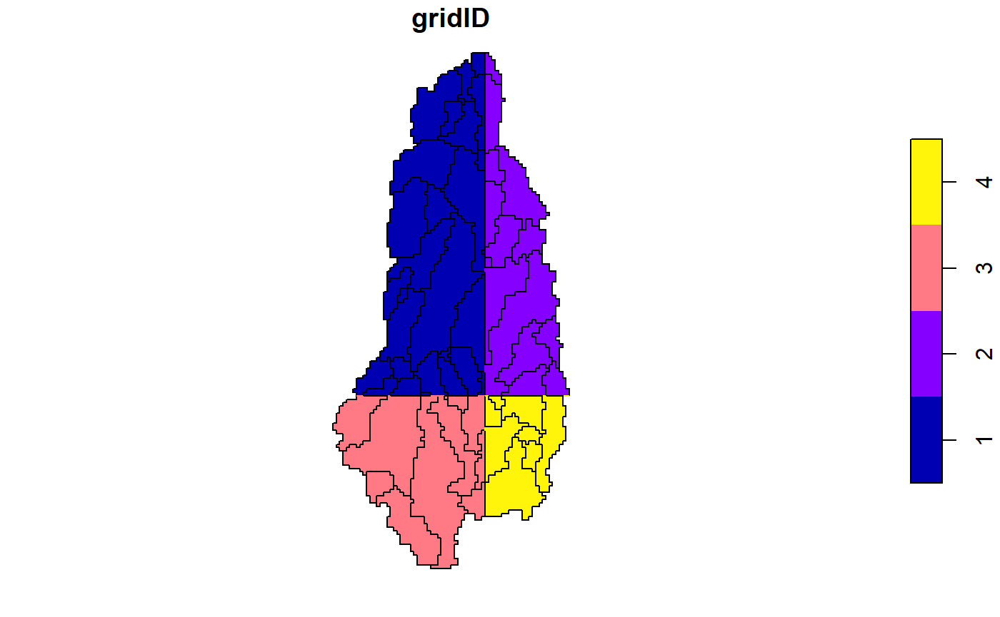
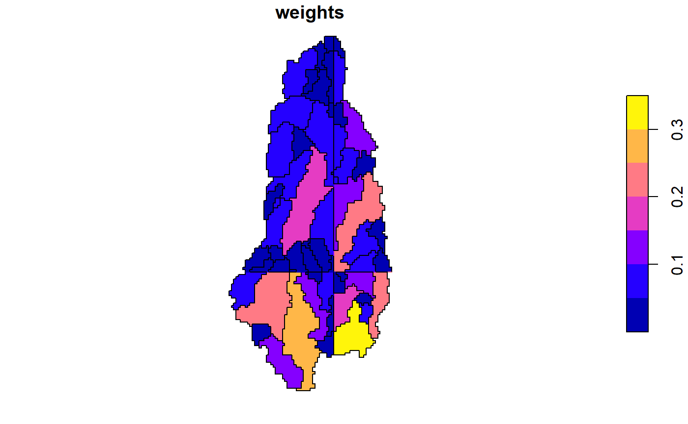

hydrostreamer tutorial
Marko Kallio
2019-04-10
hydrostreamer_simple_tutorial.RmdThe development of ‘hydrostreamer’ was inspired by a study, where one component was estimating water availability in rural villages. In that study, water availability was estimated using a regional distributed hydrological model with 5km grid resolution. The problem in the study was how it represented the available water quantity at a village. First, the grid size was too coarse to represent the stream network accurately. A regional model with 5km grid size is quite fine, but for a village level estimates where distance to water source was an important attribute. Field representation (which raster in essence is) was not satisfactory.
Hence, hydrostreamer was conceived. hydrostreamer takes an off-the-shelf runoff product of an arbitrary resolution, and assigns runoff to an explicitly represented river network. To keep things simple and approachable, there is no runoff modelling involved in the use of hydrostreamer, rather, it post-processes results from either hydrological or land surface models and with minimal input requirements. The concept of hydrostreamer is very simple and easy to grasp, with a design philosophy that it should be easy to use for anyone, without background in hydrology.
In practise, similar ideas have been used in a number of existing solutions; for instance river routing software HydroROUT, RAPID, or mizuRoute. These also take off-the-shelf runoff products, and apply river routing algorithms to predict streamflow at explicit (vector) river segments. What sets hydrostreamer apart from these solutions is that it is written in R, is easy to install and use, and most importantly, focus is not in river routing, but in the downscaling step.
This tutorial aims to explain the workflow in hydrostreamer and showcase some of it’s capabilities. More specific tutorials will be added in time, which concentrate on different parts of hydrostreamer
Using hydrostreamer
Some example data have been included to the package for tutorial purposes. It includes
1 by 1 degree DEM at located in Southeast Asia. The DEM is originally ALOS World 3D at 30 meter resolution (Tanado et al 2014), which has been resampled to 0.005 degree resolution.
1 by 1 degree runoff timeseries in the same area as the DEM. Runoff is sourced from the Linear Optimal Runoff Aggregate (LORA) at 0.5 degree resolution (see Hobeichi et al 2019). The unit of runoff is mm/s (kg/m2/s), and are provided with a monthly timestep.
A river network derived from the provided DEM with 216 river segments.
River segment specific catchment areas, delineated from the provided DEM. Catchments are provided for a subset (n = 41) of the river segments.
Let’s first load the data and inspect it:
library(hydrostreamer)
library(raster)
library(lubridate)
library(dplyr)
library(ggplot2)
library(tidyr)
data(example_rivers)
data(example_basins)
runoff <- brick(system.file("extdata", "runoff.tif", package = "hydrostreamer"))
data(example_dem)
plot(runoff[[1]])
plot(st_union(basins), add=TRUE)
plot(river, add=TRUE)

hydrostreamer main workflow occurs in four steps (and four functions):
- Convert the runoff timeseries to a HSgrid object
- Compute weights for each river segment
- Downscale runoff
- Apply river routing
1. Converting raster runoff to a polygon network
The raster layers are converted to polygons in order to do all the computations using only vector processing. Each cell of the raster is polygonized, and if an area of interest is provided, the polygons are clipped to it. This removes any unneeded grid cells. The resulting HSgrid object is a standard ‘sf’ object with information about each raster cell. The runoff timeseries (a tsibble) can be found in a named list column runoff_ts. The elements are named by the ID, and can be accessed with the ‘$’ notation.
We use raster_to_HSgrid to convert a raster timeseries to a HSgrid. Below, runoff is a RasterBrick, date is the date of the first layer in runoff, aoi is the area of interest.
HSgrid <- raster_to_HSgrid(runoff,
date = ymd("1980-01-01"),
timestep = "month",
aoi = st_union(basins),
names = "LORA")
names(HSgrid)
#> [1] "gridID" "runoff_ts" "area_m2" "n_ts" "geometry"
plot(HSgrid[,"area_m2"])
HSgrid$runoff_ts$`1`
#> # A tsibble: 396 x 2 [1D]
#> Date LORA
#> <date> <dbl>
#> 1 1980-01-01 0.00000344
#> 2 1980-02-01 0.00000166
#> 3 1980-03-01 0.000000993
#> 4 1980-04-01 0.000000874
#> 5 1980-05-01 0.000000815
#> 6 1980-06-01 0.0000279
#> 7 1980-07-01 0.0000185
#> 8 1980-08-01 0.0000503
#> 9 1980-09-01 0.0000815
#> 10 1980-10-01 0.0000557
#> # ... with 386 more rowsHSgrid can also be created from an ‘sf’ (polygon) object and a runoff timeseries using function create_HSgrid.
2. Compute weights for downscaling
Once the raster has been converted to HSgrid, we can compute the weights. compute_HSweights() provides a possibility to weight the segments by their respective catchment area, or by using river segment properties. In this tutorial we will use the provided catchment areas, and the river network itself to compute the weights.
Below we provide five arguments to the segment weighting: HSgrid - which we just created in the previous step, river - the river network, “length” for weights - we’ll use the river segment length as the basis of weighting, union of basins for area of interest - because we want only river segments within the area of interest. Finally, we tell the function that the river contains unique ID’s in the column called “SEGMENT_ID”.
For catchment-based weighting, the only difference is that the weights argument gets value “area”, and we provide the basins object to the argument with the same name.
river_weights <- compute_HSweights(HSgrid,
river,
weights = "length",
aoi = st_union(basins),
riverID = "SEGMENT_ID")
catchment_weights <- compute_HSweights(HSgrid,
river,
weights = "area",
basins = basins,
aoi = st_union(basins),
riverID = "SEGMENT_ID")To illustrate the differences between these two approaches, we can plot the weights element in the resulting HSweights object.
par(mfrow=c(1,2))
plot(river_weights$weights[,"gridID"], reset=FALSE)
plot(st_union(basins), add=TRUE)
plot(catchment_weights$weights[,"gridID"])
The river segments and catchments are split at the borders of the runoff polygons. Weights are then divided among the river segments within each individual runoff polygon. The weights inside each runoff polygon always add to 1.
par(mfrow=c(1,2))
plot(river_weights$weights[,"weights"], reset=FALSE)
plot(st_union(basins), add=TRUE)
plot(catchment_weights$weights[,"weights"])
river_weights$weights %>%
group_by(gridID) %>%
summarise(sum_of_weights = sum(weights))
#> Simple feature collection with 4 features and 2 fields
#> geometry type: MULTILINESTRING
#> dimension: XY
#> bbox: xmin: 107.3325 ymin: 12.2975 xmax: 107.6075 ymax: 12.995
#> epsg (SRID): 4326
#> proj4string: +proj=longlat +datum=WGS84 +no_defs
#> # A tibble: 4 x 3
#> gridID sum_of_weights geom
#> <int> <dbl> <MULTILINESTRING [°]>
#> 1 1 1 ((107.4325 12.5, 107.4325 12.5025), (107.43 12.5, ~
#> 2 2 1 ((107.6 12.5, 107.5975 12.5025, 107.6025 12.5075, ~
#> 3 3 1 ((107.4125 12.2975, 107.4075 12.3025, 107.4025 12.~
#> 4 4 1 ((107.5925 12.4475, 107.5875 12.4525, 107.5875 12.~The other elements of HSweights are the (routed) river network and the HSgrid object provided in the input to thhe constructing function.
3. downscale runoff
Once a HSweights object has been created, we can apply the actual downscaling. The function condences the three elements of HSweights into an ‘sf’ object containing the river routing information, downscaled runoff timeseries (the unit is converted from a field, mm/s, to volume, m^3/s).
catchment_downscaled <- downscale_runoff(catchment_weights)
( river_downscaled <- downscale_runoff(river_weights) )
#>
#> Hydrostreamer
#> No. objects: 41
#> No. runoff inputs: 2
#> Included runoff timeseries: [1] "LORA"
#>
#>
#> Simple feature collection with 41 features and 5 fields
#> geometry type: LINESTRING
#> dimension: XY
#> bbox: xmin: 107.3325 ymin: 12.2975 xmax: 107.6075 ymax: 12.9975
#> epsg (SRID): 4326
#> proj4string: +proj=longlat +datum=WGS84 +no_defs
#> # A tibble: 41 x 6
#> riverID NEXT PREVIOUS runoff_ts UP_SEGMENTS geom
#> <dbl> <dbl> <list> <list> <dbl> <LINESTRING [°]>
#> 1 56 70 <dbl [1]> <tsibble~ 1 (107.4125 12.2975, 107.40~
#> 2 65 99 <dbl [1]> <tsibble~ 1 (107.4425 12.3425, 107.43~
#> 3 67 83 <dbl [1]> <tsibble~ 1 (107.5475 12.3625, 107.54~
#> 4 69 70 <dbl [1]> <tsibble~ 1 (107.3525 12.3675, 107.35~
#> 5 70 102 <dbl [2]> <tsibble~ 3 (107.3675 12.3725, 107.37~
#> 6 77 89 <dbl [1]> <tsibble~ 1 (107.5175 12.4125, 107.51~
#> 7 79 83 <dbl [1]> <tsibble~ 1 (107.5625 12.4275, 107.55~
#> 8 83 89 <dbl [2]> <tsibble~ 3 (107.5575 12.4375, 107.56~
#> 9 85 109 <dbl [1]> <tsibble~ 1 (107.5925 12.4475, 107.58~
#> 10 88 99 <dbl [1]> <tsibble~ 1 (107.4525 12.4575, 107.44~
#> # ... with 31 more rowsThe downscaled runoff in runoff_ts is a named list column where each element is a tsibble. Like with HSgrid, each element can be accessed by its name - the ID of the river segment.
( runoff200 <- catchment_downscaled$runoff_ts$`200` )
#> # A tsibble: 396 x 2 [1D]
#> Date LORA
#> <date> <dbl>
#> 1 1980-01-01 0.00310
#> 2 1980-02-01 0.00150
#> 3 1980-03-01 0.000894
#> 4 1980-04-01 0.000787
#> 5 1980-05-01 0.000734
#> 6 1980-06-01 0.0251
#> 7 1980-07-01 0.0166
#> 8 1980-08-01 0.0453
#> 9 1980-09-01 0.0733
#> 10 1980-10-01 0.0502
#> # ... with 386 more rowsWe can compare the downscaled results from the two approaches.
plotdata <- left_join(runoff200,
river_downscaled$runoff_ts$`200`,
by="Date")
colnames(plotdata) <- c("Date", "Catchment", "River")
plotdata <- gather(plotdata,
Approach,
Runoff,
-Date)
ggplot(plotdata, aes(Date, Runoff, color=Approach)) +
geom_line() +
labs(title = "Downscaled runoff at river segment 200",
y = 'Runoff in m3/s',
x = NULL)
4. Apply river routing
While the downscaled runoff at each river segment is already useful for many applications, often knowing river discharge is also desirable. hydrostreamer provides three simple river routing algorithms for this purpose: instantaneous routing, useful for e.g. estimating runoff in the entire upstream catchment of each river segment, simple lag based routing, and Muskingum routing scheme.
Each routing method is accessible through the function accumulate_runoff(). Since the catchment provided here is small, and the timestep in runoff is one month, we’ll just use instantaneous routing here. There would be negligible difference between lag routing and instantaneous routing in this case.
catchment_discharge <- accumulate_runoff(catchment_downscaled,
method = "simple")
river_discharge <- accumulate_runoff(river_downscaled,
method = "simple")We can also plot the estimated discharge from the two approaches at segment 180 by accessing the new list column discharge_ts. The predictions can be very different.
plotdata2 <- left_join(catchment_discharge$discharge_ts$`200`,
river_discharge$discharge_ts$`200`,
by="Date")
colnames(plotdata2) <- c("Date", "Catchment", "River")
plotdata2 <- gather(plotdata2,
Approach,
Discharge,
-Date)
ggplot(plotdata2, aes(Date, Discharge, color=Approach)) +
geom_line() +
labs(title = "Downscaled discharge at river segment 200",
y = 'Q m3/s',
x = NULL) As seen from the plot, the two approaches can lead into very different estimations in small catchments - but as the river basin size increases, their predictions come closer and closer to one another.
As seen from the plot, the two approaches can lead into very different estimations in small catchments - but as the river basin size increases, their predictions come closer and closer to one another.
We recommend that segment specific catchments be used instead of river lines for weighting whenever possible, because it creates more realistic division of runoff into the river segments.
Exporting
hydrostreamer also contains a function to export the results as a GeoPackage, since it is much easier to explore the data in a GIS software with GUI.
# HSwrite(catchment_discharge, "downscaled_streamflow.gpkg")
# HSwrite(catchment_discharge, "downscaled_streamflow", what = "discharge")References
T. Tadono, H. Ishida, F. Oda, S. Naito, K. Minakawa, H. Iwamoto : Precise Global DEM Generation By ALOS PRISM, ISPRS Annals of the Photogrammetry, Remote Sensing and Spatial Information Sciences, Vol.II-4, pp.71-76, 2014.
Hobeichi, S., Abramowitz, G., Evans, J., and Beck, H. E.: Linear Optimal Runoff Aggregate (LORA): a global gridded synthesis runoff product, Hydrol. Earth Syst. Sci., 23, 851-870, https://doi.org/10.5194/hess-23-851-2019, 2019.